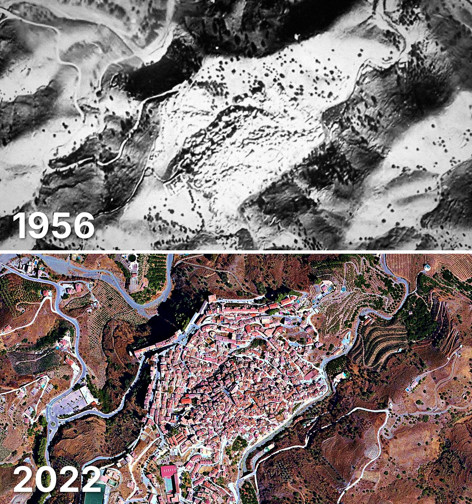

Almáchar
Almáchar tiene 973 edificios y 1.086 viviendas, y 1.959 habitantes en 2025. Al menos la mitad de sus edificios ya estaba en pie en 1956.
Cuándo se construyeron sus edificios
Desde 2015 se han terminado 4 edificios.

Las calles de Almáchar con más viviendas
- Calle Francisca Hidalgo · 57 viviendas
- Calle Campillo · 49 viviendas
- Calle Álamos · 45 viviendas
- Calle Alta · 42 viviendas
- Calle Mártires · 42 viviendas
- Calle Cabras · 37 viviendas
- Calle Sevilla · 36 viviendas
- Calle Málaga · 34 viviendas
- Avenida Andalucía · 33 viviendas
- Calle Córdoba · 30 viviendas
Toda la información de Almáchar en CASAS.ES →
Fotos de Almáchar para publicar
Estas fotos aéreas de Almáchar, de 1956 y de 2022, se pueden publicar gratis en un periódico, un blog, la web del ayuntamiento o las redes, citando la fuente como se indica debajo.

Descargar: las dos juntas · 1956 · 2022 (JPG, 1.400 px de ancho)


Texto listo para publicar
Almáchar desde el aire: así era en 1956 y así es en 2022
Las dos fotos muestran el mismo encuadre de Almáchar con 66 años de diferencia: arriba, el Vuelo Americano de 1956; abajo, la foto aérea del PNOA de septiembre de 2022. Hoy Almáchar tiene 973 edificios y 1.086 viviendas, y 1.959 habitantes en 2025. La mitad de sus edificios es de 1950 o posterior. El 60 % de sus edificios ya estaba en pie antes de 1960.
Más datos de Almáchar en CASAS.ES: casas.es/malaga/almachar
Cita para copiar
Fotos: Vuelo Americano Serie B (1956-57) y PNOA 2022, cedidos por © Instituto Geográfico Nacional (CC BY 4.0, scne.es). Datos y composición: <a href="https://casas.es/malaga/almachar/">los datos de Almáchar en CASAS.ES</a>Descarga: municipios (CSV) · calles (CSV) · Wikidata (Q1647730) · cómo usarlos en Python (dev.to) · también en OSF, Figshare y B2SHARE